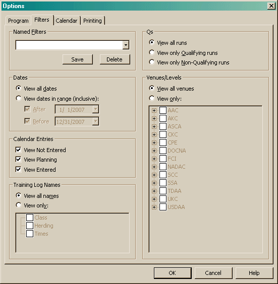

Filters allows you to set a filter that will hide entries in the main views.

Changing the Dates radio button will also enable the fields below it. If neither checkbox is checked when you close the dialog, the Dates setting will revert back to viewing all dates. Filtering dates affects all the views.
The Training Log option allows to hide entries in the Training Log based on their names.
The Calendar Entries allow you to hide entries in the Calendar view. View Not Entered will show all entries that are marked as not entered. View Planning will show all entries marked as planning. And View Entered will show all entries you have entered. These options apply to both the views in the Calendar view.
The Venues/Levels option allows you to hide runs. When you select the "View Only" radio button, the tree below it is enabled. When you check or uncheck any checkbox, it will also check/uncheck all checkboxes below it.
The Qs options allow you to view only runs that meet the desired selection. By combining this option and the Venues/Levels, it can be a very easy way of determining how you have done during a given time period. For instance, to determine how many point you have earned in a given time period, you could set the Date filter to the preceding year, the Venue/Levels to AKC/Excellent B and the Qs to Only Qualifying. The Points view will then show how many points you have earned in that time.
When filtering by Qs, it is important to note that there is one place that will ignore this particular filter: the Points View. This is simply so it can display a Qualifying percentage that makes sense. In addition, the Points View will ignore all filtering when tallying lifetime points.
All options are saved into the local Windows Registry.